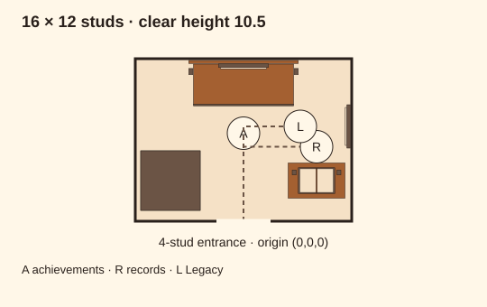
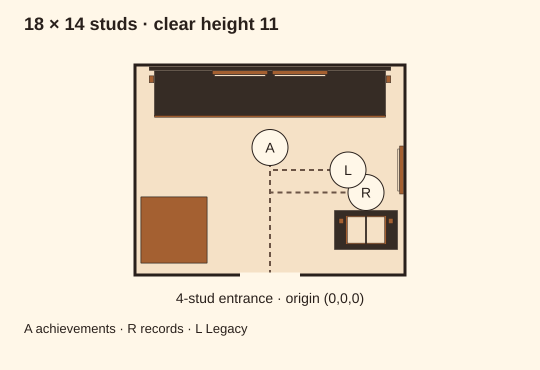
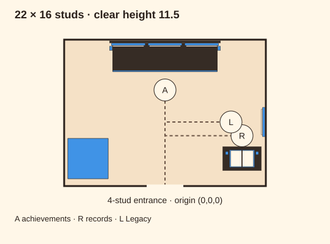
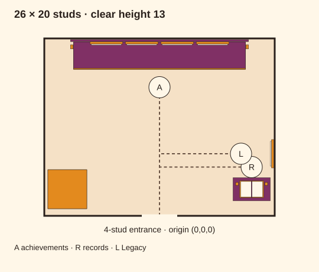

COZY · DRAFT
Worn timber / Common

2 collection positions · 1 achievement panels
18 furniture parts + 1 hidden mount root
Measured furniture studies for the achievement cabinet, career records book and Legacy plaque. Every layout reserves one featured trophy; full menu access is required by the brief. Bigger rooms add display positions.
Draft for review. These are furniture assets inside proposed clear room envelopes. The starter still needs a hollow shell. The current runtime has simplified to stat panels; this broader B2 furniture study remains deferred pending scope alignment.

2 collection positions · 1 achievement panels
18 furniture parts + 1 hidden mount root

4 collection positions · 2 achievement panels
20 furniture parts + 1 hidden mount root

6 collection positions · 3 achievement panels
24 furniture parts + 1 hidden mount root

10 collection positions · 4 achievement panels
26 furniture parts + 1 hidden mount root
Read the integration handoff · Offline geometry checks
Plans are schematic top views, not renders or pavement photographs. Studio avatar, camera, pursuit, owner/visitor menus and mobile checks remain pending.